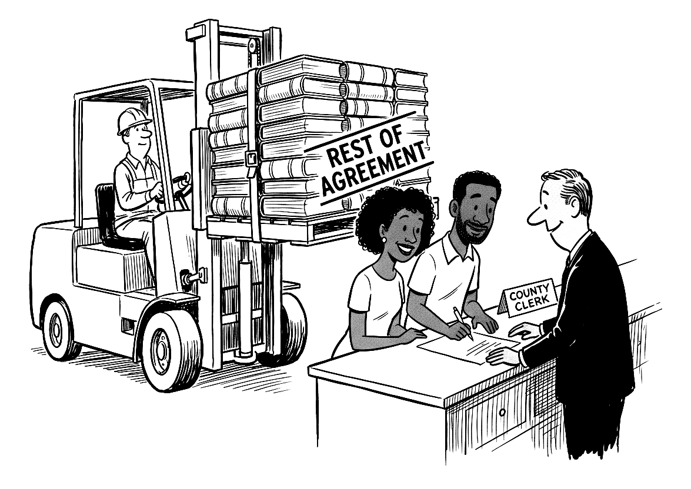

If you're married, you have a prenup. Your state wrote it. It runs to a few thousand pages of statutes and court decisions, it decides who owns your paycheck, who owes your spouse's hospital bill, and who inherits, and it changes when you move. You agreed to all of it by signing a one-page license. Nobody handed you the rest.
This book is the rest, read to you clause by clause. Every term appears twice: once as a lawyer would have drafted it if anyone ever had, and once in English. Words that look like this mark the places where the contract doesn't give an answer and hands the question to a judge you haven't met.

“Sign here. The rest will be along shortly.”
Should you buy it?
Probably, if
You're married and wondering what you agreed to. You're the main audience. It isn't too late to change any of it.
You're about to be. You may find the default already does what you want, which saves a legal fee and an awkward dinner.
Someone has handed you a prenup. Each chapter sets the default next to the usual alternatives, so you can see what you'd be giving up.
You're on your way out, and want to know the range a judge would be choosing from before you pay two lawyers to argue about it.
You want to hand it to someone. “We already have one. Want to see what it says?” is an easier sentence than “I think we need a prenup.”
Probably not, if
You need advice about your own case this month. Hire a lawyer licensed in your state. The book will make that meeting shorter. It isn't a substitute for it.
You want to be talked into a prenup, or talked out of one. The book doesn't argue for either. If you read it and keep the default, that's a fine outcome.
You want a lawyer's book. The author is an economist. No lawyer reviewed it. Every claim has a source in the notes, and sources that weren't checked against the original say so.
You want your state's rules in print. The book is the general edition. The state detail is on this site, and most of it isn't written yet.
It isn't on sale yet. It will be on Amazon in paperback and Kindle. If you'd like to be told when, leave a note with an address. Everything on this site is free in the meantime, and stays free.
Ten terms in it that surprise almost everyone
Your paycheck isn't your spouse's, until somebody files
Your contract changes when you move
The legislature can rewrite it, and it applies to you
You may owe your spouse's hospital bill
Signing a joint tax return makes you liable for all of it
The beneficiary form beats your will, and your divorce decree
A prenup can't waive rights in a 401(k)
An inheritance stops being yours when it touches the joint account
You can disinherit your children, but not your spouse
The biggest terms are one person's opinion
That's Chapter 34. The other thirty-five explain where each of those came from and what you can do about it.
What's free here, whether or not you buy it
The contracts. The whole default contract in one place, and three designed alternatives: one generous, one built to have no surprises, one that puts the children first. Copy them as plain text, paste them into a chatbot, or mark them up for a lawyer.
Your state. One page per state, in the book's order. Click the map.
Corrections. The law changes and books have mistakes. Both are logged here.
Thirty-six chapters in ten parts. Each has the Clause twice, a handful of real cases where the contract did something at least one person didn't see coming, some law that sounds made up and isn't, and the behavioral economics of why careful people handle this contract the way they do. The economics is in boxes you can skip.
Chapter list
You Already Signed
The Contract You Didn't Read
Why Nobody Reads It
Luck of the Draw
Who Wrote This Thing?
Getting In, and Whether You're In at All
Terms That Apply to Every Marriage
The Perks
Money While You're Married
Your Spouse's Debts, and Your Spouse's Tax Return
If You Die Married
The Form That Beats Your Will
The Property Clauses
Whose Is It?
How "Mine" Becomes "Ours"
Businesses, Degrees, Stock Options, and Bitcoin
The Division Clause: "As the Court Deems Just"
The Support Clauses
Alimony: Whether, How Much, How Long
Fault, Adultery, and Lifestyle Clauses
Terms You Can't Negotiate
The Kids
Embryos, Pets, and Rings
Other Contracts, and None
God's Contract and the State's
No Ring, No Contract
Round Two: Second Marriages and Blended Families
Crossing Lines
Moving States
Leaving the Country
How Everyone Else Does It
How It Actually Gets Enforced
Bargaining in the Shadow of the Law
Your Brain in a Divorce
Hiding, Spending, Finding
What It Costs
Amending Your Contract
Prenups and Postnups: What Makes Them Stick
What People Actually Put in Them
Three Contracts You Could Sign Instead
How to Raise It
Where the Contract Is Heading
The Part of Tens
Ten Terms That Surprise Almost Everyone
Ten Worst Arguments Ever Made in Divorce Court
Ten Things to Do This Weekend
How it was made
I'm an economist, and my training is in behavioral economics. I'm not a lawyer. I've been married once and our own arrangements seem fine. I was bothered to learn that I was a party to an agreement I couldn't read, and surprised that I couldn't buy a book that would read it to me.
The book was drafted with substantial help from an AI system, under my direction. No lawyer has reviewed it. The details are in its last appendix and at aporia.institute/ai.